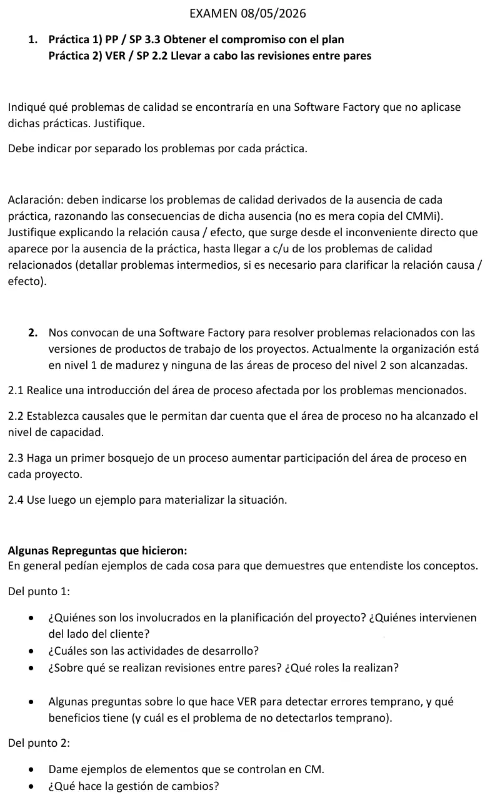

Final, 08/05/2026
Final, 08/05/2026
Enunciado


Propuesta de respuesta
Respuesta no verificada. La propuso Luta Studios con inteligencia artificial y ningún docente la revisó. Puede tener errores.
1. Problemas de calidad sin cada práctica
Práctica 1, PP / SP 3.3 Obtener el compromiso con el plan. Con esta práctica, las partes interesadas que tienen que hacer el plan o darle soporte lo aceptan como propio. Son el equipo, el cliente o usuario, el patrocinador y las otras áreas que aportan recursos.
Inconveniente directo si falta. El plan queda como un documento del jefe de proyecto. Nadie se comprometió con sus tareas, sus fechas ni sus recursos.
| Cadena | Consecuencias intermedias | Problema de calidad |
|---|---|---|
| Recursos | Las personas asignadas siguen con otros trabajos. Las tareas arrancan tarde y se atrasa el camino crítico. Para llegar a la fecha se recorta la prueba, que es la parte más grande del esfuerzo | Defectos que llegan al cliente, o una entrega fuera de término |
| Cliente | El cliente no se comprometió a estar en los relevamientos y las revisiones. Los requerimientos quedan incompletos o mal entendidos, y se construye lo que no necesita | El producto no sirve para su uso previsto, falla la validación y hay retrabajo |
| Entorno y terceros | El área que tenía que dar el entorno de pruebas o un componente no lo tiene a tiempo. Se prueba en un entorno que no representa al real | Fallas que aparecen recién en producción |
| Seguimiento | PMC SP 1.2 monitoriza los compromisos, pero no hay compromisos contra qué comparar. Los desvíos se ven tarde | Acciones correctivas tardías, con más costo y menos alcance |
Ejemplo. El plan fija que el cliente revisa los casos de uso en la semana 3, pero nadie se lo confirmó. En la semana 3 el usuario clave está de licencia y el equipo sigue con el diseño sin la revisión. En la aceptación aparece que una regla de negocio estaba mal, y hay que rehacer diseño, código y pruebas.
Práctica 2, VER / SP 2.2 Llevar a cabo las revisiones entre pares. Con esta práctica, compañeros con conocimientos revisan los productos de trabajo, como requerimientos, diseño, código o casos de prueba, y registran los problemas que encuentran.
Inconveniente directo si falta. Los productos de trabajo pasan a la etapa siguiente revisados solo por su autor, y sus defectos no se detectan cuando nacen.
| Cadena | Consecuencias intermedias | Problema de calidad |
|---|---|---|
| Defectos tardíos | La mayoría de los defectos se introduce en requisitos y diseño. Un requerimiento ambiguo sin revisar se diseña y se codifica. El defecto aparece recién en aceptación o producción, y corregirlo cuesta más cuanto más tarde aparece | Defectos en producción, retrabajo, atraso y más costo |
| Pruebas débiles | Los casos de prueba sin revisar no cubren todas las particiones ni todos los escenarios. Las pruebas dan bien aunque haya errores | Defectos que llegan al cliente con las pruebas aprobadas |
| Sin datos | Sin revisiones no hay datos de revisión (VER SP 2.3). La organización no sabe dónde se introducen sus defectos, y OPF no tiene de dónde sacar mejoras | Los mismos defectos se repiten en otros proyectos |
| Conocimiento en una persona | Solo el autor conoce el producto. Si se va, nadie lo puede mantener bien | Mantenimiento lento y con errores |
Ejemplo. Un analista escribe «el sistema debe validar la edad» sin decir el rango. Nadie lo revisa, el programador acepta cualquier entero y el tester prueba con 30 años. En producción se cargan edades negativas, y hay que corregir datos, código y casos de prueba.
2. Problemas de versiones en una empresa de nivel 1
2.1 Introducción al área. El área afectada es CM, Gestión de configuración. Es un área de soporte de nivel de madurez 2, y su propósito es mantener la integridad de los productos de trabajo. Se apoya en tres conceptos.
- Elemento de configuración. Cualquier producto de trabajo cuyo cambio pueda resultar crítico.
- Línea base. Productos de trabajo revisados y acordados formalmente, que son la base del desarrollo posterior y solo cambian con control de cambios.
- Integridad. Que los productos sean los correctos y estén completos.
Sus prácticas son identificar elementos de configuración, establecer un sistema de gestión de configuración y crear o liberar líneas base (SG 1), seguir las peticiones de cambio y controlar los elementos (SG 2), y establecer registros y realizar auditorías de configuración (SG 3). Sin CM aparecen las preguntas de la guía. «¿Cuál es la versión que tiene el cliente?», «No puedo reproducir el problema en mi versión», «¿Qué ha ocurrido con la corrección que hice el mes pasado?».
2.2 Causales de que no alcanzó el nivel de capacidad. Para el nivel de capacidad 1 hay que satisfacer las metas específicas. Si falla al menos una, el área queda en 0, incompleto. Estas son las evidencias que se buscan, meta por meta.
| Meta | Lo que muestra que no se satisface |
|---|---|
| SG 1, líneas base | No hay una lista de elementos de configuración con identificador único. Cada uno guarda los archivos donde puede, sin repositorio común. No hay líneas base acordadas en ningún hito |
| SG 2, seguimiento y control de cambios | Los cambios se hacen sin solicitud registrada, sin evaluar el impacto y sin que nadie los apruebe. No se sabe quién cambió qué |
| SG 3, integridad | No hay registro de qué versión tiene cada cliente ni de qué componentes forman cada versión. Nunca se audita lo que se entrega |
Aunque se cumplieran las metas, para el nivel 2 faltaría institucionalizar el área. Haría falta una política, recursos, personal capacitado, partes interesadas identificadas, control y evaluación de adherencia. En una empresa de nivel 1 eso tampoco está.
2.3 Bosquejo del proceso. Para que CM participe en cada proyecto:
- Al iniciar el proyecto, el responsable de CM arma el plan de configuración. Define qué elementos entran, con los criterios de la guía (los usan dos o más grupos, pueden cambiar, dependen de otros o son críticos), cómo se nombran y quién accede.
- Se identifica cada elemento con un identificador único (SP 1.1).
- Se establece el sistema de gestión de configuración, con sus bibliotecas dinámica, máster y estática (SP 1.2).
- Se crean las líneas base en los hitos acordados, funcional, de desarrollo y de producto (SP 1.3).
- Todo cambio entra por una solicitud. Se evalúa su impacto, el comité de cambios lo acepta o lo rechaza, se modifica y se registra (SP 2.1 y 2.2).
- Se registra el estado de cada elemento y qué versión tiene cada cliente (SP 3.1).
- Antes de cada liberación se hace una auditoría de configuración (SP 3.2), y se libera con identificación, empaquetado y entrega.
Para que no dependa de la buena voluntad del proyecto, la organización fija una política de CM, da una herramienta y un responsable, capacita a la gente (OT) y PPQA evalúa que se cumpla.
2.4 Ejemplo. Un cliente reporta una falla en la versión 1.3. Sin CM, nadie sabe qué código fuente armó la 1.3. Se corrige sobre el código actual, que ya tiene funciones a medio hacer, y al cliente le llega una versión con cambios que no pidió y que nadie probó. Con CM, la línea base de la 1.3 está en la biblioteca estática. Se registra la solicitud de cambio, se evalúa el impacto, se corrige sobre esa línea base, se audita y se entrega. El registro de estado dice qué otros clientes tienen la 1.3 y también necesitan la corrección.
Repreguntas
| Repregunta | Respuesta |
|---|---|
| ¿Quiénes son los involucrados en la planificación? | El director, el cliente o usuario, el equipo, el equipo de dirección, el patrocinador y los influyentes |
| ¿Quiénes intervienen del lado del cliente? | El cliente o usuario, el patrocinador y los influyentes de su organización, por ejemplo los usuarios clave y quien aprueba el presupuesto |
| ¿Cuáles son las actividades de desarrollo? | Las disciplinas de RUP, Modelado de negocio, Requisitos, Análisis y diseño, Implementación, Prueba y Despliegue |
| ¿Sobre qué se hacen revisiones entre pares? | Sobre productos de trabajo, por ejemplo requerimientos, casos de uso, diseño, código, planes y casos de prueba |
| ¿Qué roles las realizan? | En CMMI, líder, lector, notario y autor. En la presentación de la cátedra, moderador, autor, documentador, revisores y supervisor |
| ¿Qué hace VER para detectar errores temprano? | Revisa los productos de trabajo antes y durante el desarrollo, sin esperar a ejecutar, con revisiones entre pares e inspecciones |
| ¿Qué beneficios tiene? | Los defectos nacen sobre todo en requisitos y diseño, y corregirlos cuesta más cuanto más tarde se encuentran. Encontrarlos temprano baja costo y retrabajo |
| Ejemplos de elementos que se controlan en CM | Planes, descripciones de proceso, requerimientos, datos de diseño, código, compiladores y publicaciones |
| ¿Qué hace la gestión de cambios? | Recibe la solicitud de cambio, evalúa su impacto, el comité de cambios la acepta o la rechaza, se modifica y se registra. Define quién solicita, cómo se notifica, quién evalúa, quién acepta y quién modifica |
Respuesta no verificada. Puede tener errores.
Se armó con la página Final, secciones Causa y efecto y Repreguntas que hicieron, Gestión de configuración CM, Tipos de revisión y Áreas para relacionar de Aprobación directa, y Gestión de proyecto y Verificación y validación de Regularización.
Quedó en duda: La cadena causa y efecto sigue los pasos de la página Final, y la corrección puede esperar otras consecuencias o otro orden. Los involucrados en la planificación salen de la lista de interesados de la guía de proyecto.
¿Cómo te fue?
Marcá cada tema del examen.
- PPMetas y prácticas genéricas, en Regularización
- VERDónde nacen los defectos, en Regularización
- CMGestión de configuración CM, en Aprobación directa
- Causa y efectoCausa y efecto, en Final